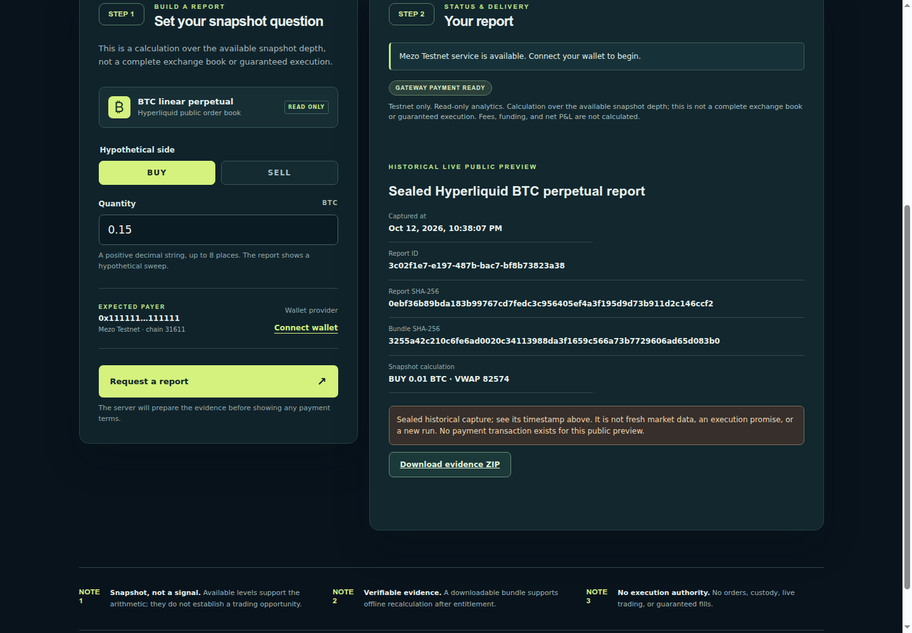
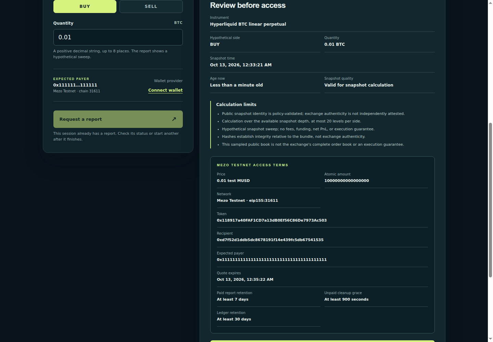

A useful way to spend MUSD.
Market reports
you can verify.
Liqvera.
Mezo Testnet · Track 2
Public BTC market data0.01 test MUSD / report
Liqvera makes market reports you can verify. We give test MUSD a concrete use: access to a public BTC market-depth report that you can download, inspect, and independently reproduce.
01/08The problem
A headline price
leaves out the depth.
Order size changes the average price.
Screenshots omit the inputs.
Evidence should travel with the report.
For analysts and developers · Audience hypothesis
A headline price does not show the depth behind an order. Analysts and developers need the available liquidity, clear assumptions, and calculations they can check after a report leaves the original service.
02/08Actual browser capture · October 13
Inspect before paying.

Here is the real public preview. Its capture time, hypothetical order quantity, result, and hashes are visible. This is a sealed October 12 snapshot, clearly labelled, with an evidence ZIP available without payment.
03/08Actual downloaded preview · Recalculated locally
Take the evidence
with you.
$ liqvera-evidence-verify evidence.zip
INTEGRITY_REPRODUCED
snapshot_status: VALID_FOR_SNAPSHOT_CALCULATION
exchange_authenticity_verified: false
execution_authority: NONE
Result captured October 13 · Exact fractions and decimals
The downloaded bundle passes our offline verifier. It checks integrity and recomputes the depth results using exact arithmetic. This establishes reproducibility from the included inputs. It does not prove exchange authenticity or promise execution.
04/08Actual fresh quote · No signature submitted
Review exact
Testnet terms.

For a fresh report, the service captures public Hyperliquid data and displays immutable terms. This actual browser check reached payment confirmation on Mezo Testnet. The wallet provider is a non-signing stub, so no purchase is claimed.
05/08How MUSD fits
Pay once.
Keep the report.
Wallet authorization → x402 settlement
→ Confirmed access → JSON + evidence ZIP
Fixed recipient and price
Report hashes bound to delivery
Recovery without blind resubmission
Checkout enabled · Fresh signed acceptance still pending
Our x402 gateway binds payment and delivery to exact report hashes. Confirmed access supports repeat downloads without charging again. Historical Testnet purchases succeeded; a new signed purchase on the current deployment remains the acceptance step.
06/08Built and checked
Complete services.
Explicit evidence.
71Gateway tests
31Browser tests
7Healthy services
Source-bound tests · Exact-image security audits
No untriaged findings in the recorded audit scope
Gateway/browser tests: 5f87329. Health: October 13.
These checks do not replace a confirmed purchase.
The product includes the browser, gateway, public capture, report builder, PostgreSQL ledger, and offline verifier. Source-bound tests and exact-image security audits support the implementation. We publish their scope and preserve unresolved acceptance limits.
07/08Dimkox · The Mezo Buildathon
Make MUSD useful.
Make results verifiable.
Wave 1: improve and demonstrate access
Wave 2: apply feedback and show progress
liqvera.site
github.com/Dimkox/liqvera
Existing project · Pre-event preparation · Not submitted
Customer demand and willingness to pay remain to be validated.
Liqvera enters Track Two as an existing project. Our proposed next steps are better access, user testing, and measurable progress between waves. Explore the demo and source. Built by Dimkox. Market reports you can verify.
08/08